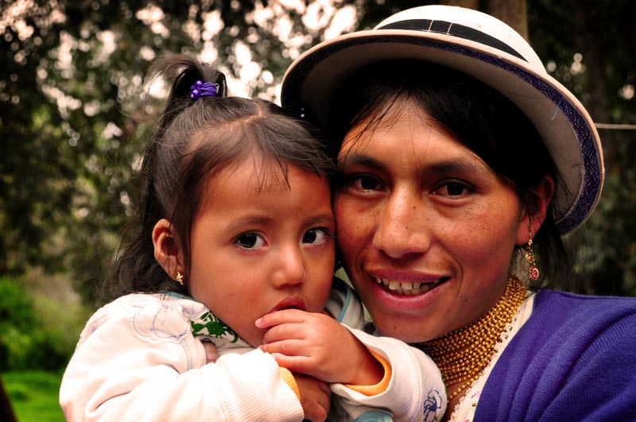
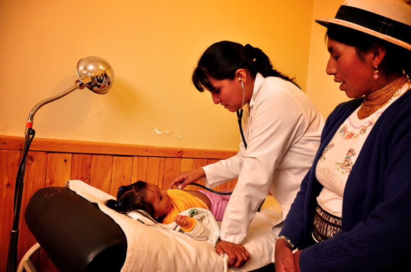
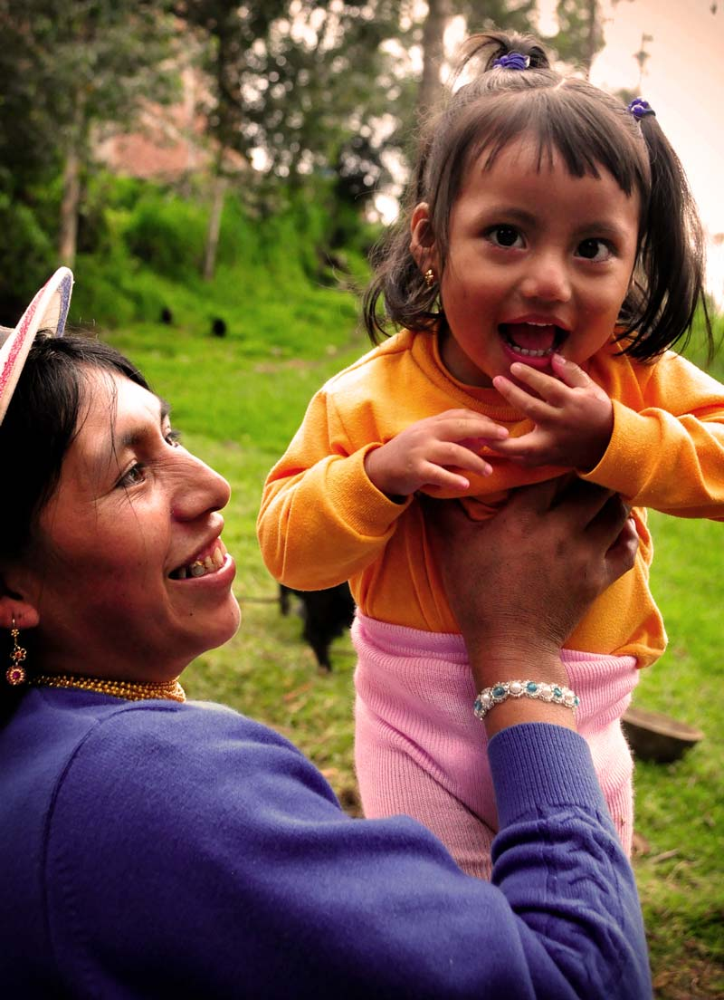

During financial year 2014, Peru and Ecuador strategically closed 18 of their Child Survival Program centres in areas where poverty levels have improved, moving their resources to areas of greater need.
A Need
Hidden away in the centre of the Sierra region of Ecuador, in the cold province of Bolivar, is a small indigenous community called Paltabamba. Most of the families who live here are poor farmers depending on seasonal crops. While the men work on their own land or as construction workers, the women care for their children at home. There is no sewage system or potable water, so sicknesses such as diarrhoea are common among children.
Luz Maria knows this all too well. She felt helpless when her 20-month-old daughter fell ill.
“She was one year and eight months old, and she was vomiting, with diarrhoea and fever,” says Luz Maria.
“This got worse daily and she died in a few days.”
Devastatingly, a few years later Luz Maria found herself in a similar situation with her younger daughter Emily. But this time she wasn’t alone. The presence of the Compassion Child Survival Program in her community meant that when Emily became sick, help was at hand.
A Difficult Start
When Emily was born with a cleft palate, Luz Maria was told she needed surgery. As her husband only earned a small, unsteady income through temporary jobs, Luz Maria knew they could never pay for Emily’s surgery.
As Emily grew, her cleft palate meant she struggled to eat and quickly became malnourished. She couldn’t sit or hold her head up and she had no strength in her legs to start crawling. As she watched her daughter become weaker every day, Luz Maria searched desperately for a way for Emily to have the surgery.
“Everything [she ate or drank] would come out her nose,” says Luz Maria.
“I couldn't breastfeed her. I gave her prepared milk with a special bottle, but she couldn't eat. She was malnourished; she was just skin and bones.”
Hope with Compassion
Eventually, Luz Maria found hope with Compassion. When the staff of a local Child Survival Program centre heard about Emily’s condition, they set to work to find a way for Emily to have the operation.
“We were interested in finding a place where she could have surgery, and we found a foundation that could do it,” says staff member Maribel Maldonado.
Emily’s operation was successful, and the Child Survival Program covered all the extra expenses both before and after the operation. She soon overcame her struggles to eat, and began to grow. But another hurdle for little Emily was just around the corner.
Another health challenge
One morning, Emily developed a high fever and started vomiting. Immediately Luz Maria rushed her to the Child Survival Program, who took her to the hospital. While doctors initially said Emily was fine, her condition soon worsened. Her temperature spiked so high it caused terrifying convulsions. Local staff stayed by Luz Maria’s side, determined to find what was causing Emily’s sickness.
Finally, five hours from Paltabamba in Guayaquil city, Emily was examined by specialists and diagnosed with meningitis. Her condition was critical and doctors needed to act fast to save her life. With the added complication of pneumonia, Emily was induced into a coma.
“I watched as she fought to breathe, and I thought she was dying,” says Luz Maria.
Luz Maria watched on with fear in her heart as she realised Emily had the same symptoms that her sister had died from. But immediate medical intervention meant that Emily had a fighting chance. Little by little, day by day, Emily improved.
“If the [Child Survival] Program had not existed, I don't know what our situation would be like,” says Luz Maria.
“If she hadn't been in the program, she would certainly have died.”
Today Emily is a vibrant toddler becoming stronger each day. Luz Maria’s heart is finally at peace.
“I’m happy to belong to this program. My situation was very sad and difficult, but now I'm doing well and at peace. I thank [the staff] from the bottom of my heart, because they've been with me through all this.”
Words: Cecilia Yepez and Amy Millar
Photo: Cecilia Yepez